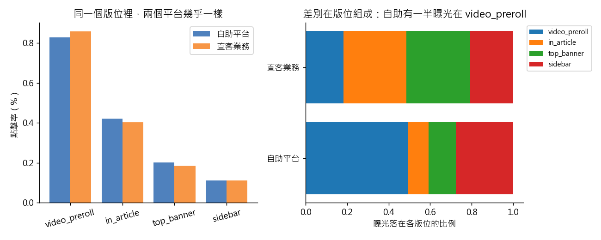

練習 08 - 自助平台點擊率真的比較高嗎
在本單元中，會介紹第 8 題背後的商業問題、它練的是哪一種資料分析，以及從資料到結論的完整做法、程式與圖表。建議先回 Hub - 資料分析練習案例庫 自己試著做一次，再來對照這一頁。
有人會這樣問你
「業務主管說自助下單平台的點擊率比我們直客業務高四成，要我們把好版位多留給自助平台。這個差距是真的嗎？大到值得改版位分配嗎？」
用到的資料：ad_daily（L1 檔名 ad_daily_2024_10.csv）
對應單元：從描述到推論 這個差異是真的嗎
這一題在商業上要回答什麼
版位是廣告營收最核心的資源。差距「顯著」不代表值得改分配政策；這門生意照曝光計價，點擊率高一點也不會多賺一塊錢。
這一題練的是哪一種資料分析
這一題練的是推論統計與分層比較。p 值只回答「這個差距是不是抽樣抽出來的」，不回答「這個差距重不重要」。把資料按版位分層再比一次，才能把組成差異和真正的平台差異分開，這是辛普森悖論最常見的一種長相。
四個版位平均分配是 2.00 bits；自助平台的曝光組成只有 1.73 bits，直客是 1.96 bits。自助平台的曝光比較集中，集中在點閱率最高的 video_preroll，這個組成差異才是整月點閱率差距的來源。見 Entropy 與 Shannon 資訊理論
一步一步怎麼做
- 四個平台各自把 click_cnt 與 impression_cnt 先加總、再相除，得到整月 CTR（不是把每一列的 CTR 拿去平均）。
- 對 kmg_selfserve 與 kmg_direct 做兩組比例的 z 檢定，報差值與 p。
- 同一組比較，按 placement 拆成四個版位各做一次。
- 想換算成錢的話，revenue 這一欄混了 TWD 與 USD，兩個程序化平台記的是美金，要先乘匯率 31.5 才能加。
工具怎麼選 語言用 Python：這題只需要加總與一個 z 檢定，statsmodels.stats.proportion.proportions_ztest 直接吃「點擊數、曝光數」兩個數字，不必把上千萬次曝光展開成一列一個 0 或 1。
看完整程式（Python）
from _kmg import *
from statsmodels.stats.proportion import proportions_ztest
a = ad()
a["twd"] = twd(a)
g = a.groupby("platform").agg(c=("click_cnt", "sum"), i=("impression_cnt", "sum"), t=("twd", "sum"))
ctr = g["c"] / g["i"]
print("整月 CTR 自助（%）", float(ctr["kmg_selfserve"] * 100))
print("整月 CTR 直客（%）", float(ctr["kmg_direct"] * 100))
print("差距（百分點）", float((ctr["kmg_selfserve"] - ctr["kmg_direct"]) * 100))
z, p = proportions_ztest([g.loc["kmg_selfserve", "c"], g.loc["kmg_direct", "c"]],
[g.loc["kmg_selfserve", "i"], g.loc["kmg_direct", "i"]])
print("z", float(z))
print("p 小到接近 0", bool(p < 1e-100))
two = a[a["platform"].isin(["kmg_selfserve", "kmg_direct"])]
gp = two.groupby(["placement", "platform"]).agg(c=("click_cnt", "sum"), i=("impression_cnt", "sum"))
cp = (gp["c"] / gp["i"] * 100).unstack()
for pl, es, ed in [("top_banner", 0.201, 0.185), ("in_article", 0.422, 0.402),
("sidebar", 0.111, 0.110), ("video_preroll", 0.829, 0.859)]:
print("%s 自助（%%）" % pl, float(cp.loc[pl, "kmg_selfserve"]))
print("%s 直客（%%）" % pl, float(cp.loc[pl, "kmg_direct"]))
mix = two.groupby(["platform", "placement"])["impression_cnt"].sum().unstack()
share = mix.div(mix.sum(axis=1), axis=0)
print("自助曝光落在 video_preroll 的比例", float(share.loc["kmg_selfserve", "video_preroll"]))
print("直客曝光落在 video_preroll 的比例", float(share.loc["kmg_direct", "video_preroll"]))
rpc = g["t"] / g["c"]
print("每次點擊收入 最低平台", float(rpc.min()))
print("每次點擊收入 最高平台", float(rpc.max()))
print("直客整月曝光（萬）", float(g.loc["kmg_direct", "i"] / 1e4))
extra = float(g.loc["kmg_direct", "i"] * (ctr["kmg_selfserve"] - ctr["kmg_direct"]))
print("直客補到自助水準多出的點擊（萬）", extra / 1e4)
# 課堂概念：entropy。版位組成越集中，entropy 越低（四個版位平均分是 2 bits）
print("版位組成 entropy 自助（bits）", entropy_bits(share.loc["kmg_selfserve"]))
print("版位組成 entropy 直客（bits）", entropy_bits(share.loc["kmg_direct"]))
reversed_vp = bool(cp.loc["video_preroll", "kmg_direct"] > cp.loc["video_preroll", "kmg_selfserve"])
diffs = (cp["kmg_selfserve"] - cp["kmg_direct"]).abs()
order = ["video_preroll", "in_article", "top_banner", "sidebar"]
fig, ax = plt.subplots(1, 2, figsize=(10, 4))
x = np.arange(4)
ax[0].bar(x - 0.2, cp.loc[order, "kmg_selfserve"], 0.4, label="自助平台", color="#4f81bd")
ax[0].bar(x + 0.2, cp.loc[order, "kmg_direct"], 0.4, label="直客業務", color="#f79646")
ax[0].set_xticks(x, order, rotation=15)
ax[0].set_ylabel("點擊率（%）")
ax[0].set_title("同一個版位裡，兩個平台幾乎一樣")
ax[0].legend()
left = np.zeros(2)
for pl in order:
vals = share.loc[["kmg_selfserve", "kmg_direct"], pl].values
ax[1].barh(["自助平台", "直客業務"], vals, left=left, label=pl)
left += vals
ax[1].set_xlabel("曝光落在各版位的比例")
ax[1].set_title("差別在版位組成：自助有一半曝光在 video_preroll")
ax[1].legend(fontsize=8, loc="upper left", bbox_to_anchor=(1.0, 1.0))
save_fig(fig, "ex08_ctr_by_placement.png")
程式開頭的 from _kmg import * 載入共用的讀檔、去重、換幣別與畫圖函式，內容放在 練習 01 - 月會上的則數對不對。
結果會看到什麼
整月 CTR 自助 0.507%、直客 0.358%，差 0.149 個百分點，z 大約 58，p 小到印出來就是 0。但拆到版位就散掉了：top_banner 0.201% 對 0.185%、in_article 0.422% 對 0.402%、sidebar 0.111% 對 0.110%，而 video_preroll 反過來是直客比較高（0.859% 對 0.829%）。真正的差別在版位組成：自助平台有 49% 的曝光落在 CTR 最高的 video_preroll，直客只有 18%。再把每次點擊帶進的收入算出來，四個平台是 16.6 到 17.3 元，幾乎一樣——因為這門生意是照曝光計價的。
圖怎麼讀

左圖是同一個版位裡兩個平台的點擊率，四個版位都很接近，video_preroll 還是直客比較高。右圖是兩個平台的曝光落在各版位的比例，自助平台一半的曝光在點擊率最高的 video_preroll。繼續練習
上一題 練習 07 - 訂閱功勞該算誰的、下一題 練習 09 - 付費牆讓流量掉幾成，或回到 Hub - 資料分析練習案例庫 挑別的題目。
學生版｜更新於 2026-09-13 11:59